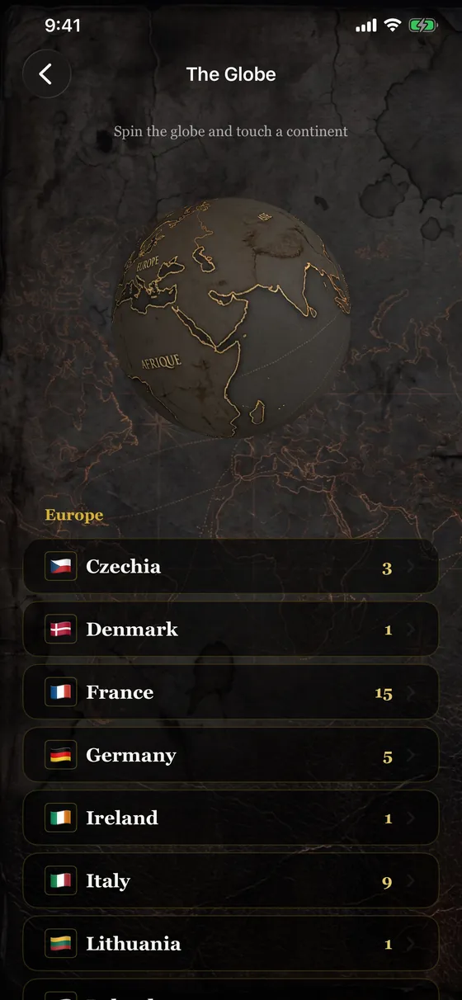
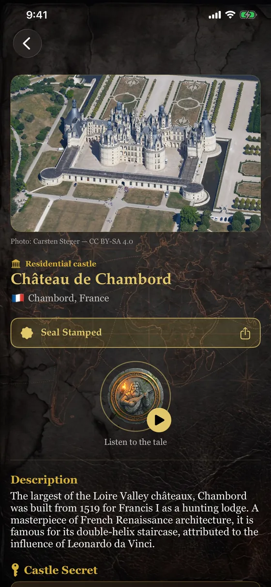
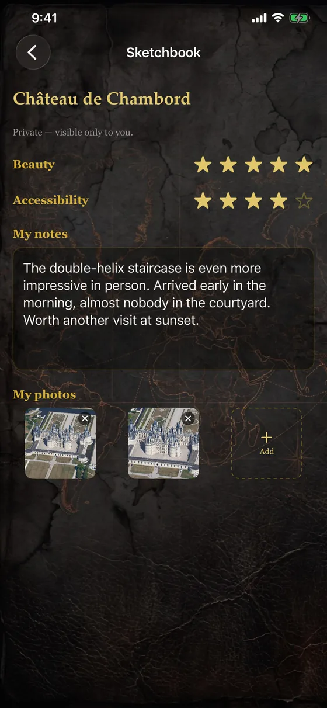

Features
Explore, listen, collect
Everything Fort et Château does, from the 3D globe to the Sketchbook.
A 3D globe to spin
Spin the globe with your fingertip, touch a continent and discover its countries. 32 countries across 6 continents, from France to Japan, from Peru to New Zealand.
- Search by castle name, city or country
- “Near me”: the sites closest to your location
- Browse by country, with the number of sites

A page for every place
Photo, type of site, the place's history and a map to get directions with Maps. Every page hides a “Castle Secret” under a scratch layer: an anecdote to reveal with your fingertip.
- Free-licensed photos, credited under each image
- Directions in one tap
- Content built into the app: everything works offline

The Bard tells the places
Touch the Bard's medallion: a warm voice tells the story of the castle, in French or English. 15 sites are narrated.
- About twenty seconds per tale
- Play and pause with a tap

The Castle Duel
Two castles face off: swipe or tap to pick your favorite. Your personal ranking builds up duel after duel, and you can share your Top 3 as an image.
- Ranking by number of wins
- Shareable “My Top 3” card
- Reset whenever you like

The Explorer's Passport
On site, validate your visit: your wax seal is stamped (position checked within 300 m) and you can share your “Confirmed Explorer” card.
- Conquest List: the sites you want to visit
- 10 badges: First Seal, Cosmopolitan, World Tour…
- Location used on the device only

The Sketchbook
For every visited site, keep your notes, your photos, a beauty rating and an accessibility rating. Everything stays private, on your device.
- Free-form notes
- Up to 6 photos per site
- Nothing is shared without your tap

And also
- Fully bilingual French / English interface, switchable at the top of the menu
- iPhone and iPad
- No account, no ads, no tracking
- Works offline
- Shareable cards: Confirmed Explorer and Top 3
Ready to explore?
Download Fort et Château on the App Store and set off to discover the world's fortresses.
Download on the App Store